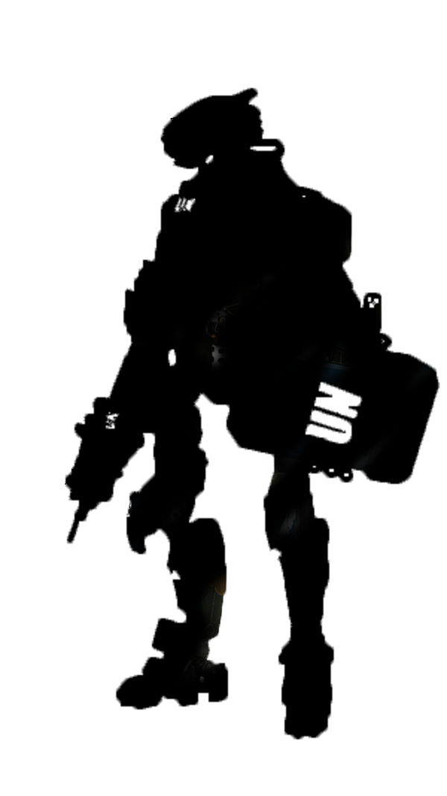

Special-Mades For
Peace and Developments
The International Special-Made Agency is the world's central intergovernmental forum for scientific and technical co-operation in the Special-Made field. It works for the safe, secure and peaceful uses of Special-Made science and technology, contributing to international peace and security and the United Nations' Sustainable Development Goals.
Learn more
